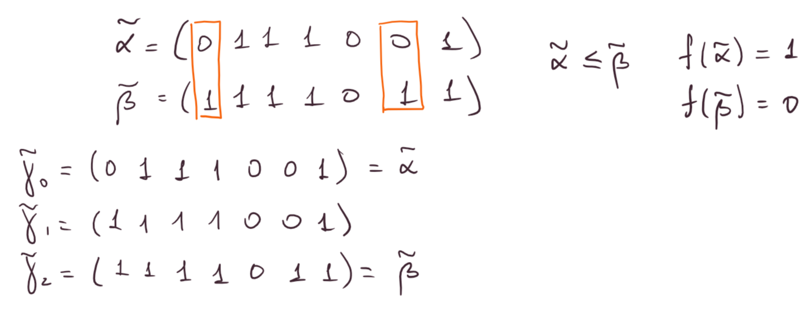

2023
Определение: Формулы \(\Phi_1\) и \(\Phi_2\), заданные в сигнатуре \(\Sigma\) эквивалентны, если они задают равные функции относительно объединения своих переменных.
Определение: Булева функция \(f^{*} = \overline{f(\overline{x}_1, \ldots, \overline{x}_n)}\) - двойственная к функции \(f\).
Определение: Функция \(f\) самодвойственная, если \(f^{*} = f\).
дичь какая-то
\[x^{\sigma} = \begin{cases} x,\,\,\,\, \sigma = 1\\ \overline{x},\,\,\,\, \sigma = 0 \end{cases} \,\,\,\,\,\,\,\, \sigma \in \{0, 1\}\]
Теорема: (ДНФ) Пусть \(f\) булева функция от \(n\) переменных. Тогда \[f(x_1, \ldots, x_n) = \displaystyle\bigvee_{(\sigma_1, \ldots, \sigma_m)}x_1^{\sigma_1}\cdot\ldots\cdot x_n^{\sigma_m}f(\sigma_1, \ldots, \sigma_m, x_{m + 1}, \ldots, x_n)\]
Доказательство: Пусть \((\alpha_1, \ldots, \alpha_n)\) произвольный двоичный набор. Если \(\exists i: \,\,\,\, (\alpha_1, \ldots, \alpha_n) \ne (\sigma_1, \ldots, \sigma_n)\), то \(x_1^{\sigma_1}\cdot\ldots\cdot x_n^{\sigma_m}f(\sigma_1, \ldots, \sigma_m, x_{m + 1}, \ldots, x_n)\) на этом наборе \(0\). То есть нужно рассматривать только наборы \((\alpha_1, \ldots, \alpha_n) = (\sigma_1, \ldots, \sigma_n)\), для которых \(\alpha_1^{\alpha_1}\cdot\ldots\cdot \alpha_n^{\alpha_m}f(\alpha_1, \ldots, \alpha_m, \alpha_{m + 1}, \ldots, \alpha_n) = f(\alpha_1, \ldots, \alpha_n) \,\,\,\,\blacksquare\)
Определение: Совершенная дизъюнктивная нормальная форма - это правая часть равентва из теоремы при \(m = n\).
Определение: Совершенная конъюнктивная нормальная форма получается из СДНФ для двойственной функции по принципу двойственности (принцип двойственности - это, конечно, дичь).
Определение: Система \(\{f_1, \ldots, f_n\}\) булевых функций полна, если с помощью суперпозиций из нее можно получить любую функцию алгебры логики.
Утверждение: Система \(\{\overline{x}, x \vee y, x \wedge y\}\) полна.
Доказательство: \(\,\,\,\,\blacksquare\)
Утверждение: Пусть система \(M\) полна. Если любую функцию из \(M\) можно выразить суперпозициями функций из \(M’\), то \(M’\) полна.
Утверждение: Следующие системы полны:
Доказательство: \(\,\,\,\,\blacksquare\)
Утверждение: Любая булева функция представима в виде полинома по модулю \(2\) единственным образом.
Доказательство: Система \(\{0, 1, x\cdot y, x + y\}\) полна, а значит любая функция представима полиномом.
Докажем единственность. Посчитаем количество различных полиномов. Количество мономов (произведение некоторых \(k < n\) переменных) равно количеству подмножеств множества из \(n\) элементов, то есть \(2^n\). У каждого монома свободный член либо \(0\) либо \(1\), то есть получаем \(2^{2^n} \,\,\,\,\blacksquare\)
Определение: Операции суперпозиции - это подстановка переменных, подстановка функции, добавление либо удаление несущественных переменных. Функция, полученная из исходной с помощью операций суперпозиции, получена суперпозициями.
Определение: Пусть \(M = \{f_1, \ldots, f_n\}, \,\,\,\, f_i\) - булева функция. Замыкание \(M\) - это множество всех булевых функций, которые можно получить из \(M\) суперпозициями.
Обозначается: \([M]\)
Определение: Система полна, если ее замыкание совпадает с \(P_2\).
Утверждение: Пусть \(M, M_1, M_2\) системы булевых функций. Тогда
Доказательство: \(\,\,\,\,\blacksquare\)
Определение: Система \(M\) булевых функций замкнута, если \([M] = M\).
Пример: Замыкание любой системы - замкнутое множество.
Определение: (функции, сохраняющие \(0\)) \(T_0 = \{f \in P_2: \,\,\,\, f(0, \ldots, 0) = 0\}\).
Определение: (функции, сохраняющие \(1\)) \(T_1 = \{f \in P_2: \,\,\,\, f(1, \ldots, 1) = 1\}\).
Утверждение: \(T_0\) и \(T_1\) замкнуты.
Доказательство: проверка по пунктам каждой операции суперпозиции \(\,\,\,\,\blacksquare\)
Определение: Множество всех самодвойственных функций обозначается \(S\).
Утверждение: \(S\) замкнут.
Доказательство:
Утверждение: Пусть \(f\) не является самодвойственной. Тогда суперпозициями из \(f\) и \(\overline{x}\) можно получить константу.
Доказательство: \(f \not\in S \Rightarrow \exists (\alpha_1, \ldots, \alpha_n): \,\,\,\, f(\alpha_1, \ldots, \alpha_n) = f(\overline{\alpha}_1, \ldots, \overline{\alpha}_n)\). Пусть \(g(x) = f(x^{\alpha_1}, \ldots, x^{\alpha_n})\). Тогда \(g(0) = f(0^{\alpha_1}, \ldots, 0^{\alpha_n}) = f(\overline{\alpha}_1, \ldots, \overline{\alpha}_n) = f(\alpha_1, \ldots, \alpha_n) = f(1^{\alpha_1}, \ldots, 1^{\alpha_n}) = g(1) \,\,\,\,\blacksquare\)
Определение: Пусть даны два двоичных набора \(\tilde{\alpha} = (\alpha_1, \ldots, \alpha_n)\) и \(\tilde{\beta} = (\beta_1, \ldots, \beta_n)\). \(\tilde{\alpha} \le \tilde{\beta}\), если \(\forall i \in \{1, \ldots, n\}\,\,\,\, \alpha_i \le \beta_i\).
Определение: Булева функция \(f\) монотонна, если для любых наборов \(\tilde{\alpha}\) и \(\tilde{\beta}\), таких, что \(\tilde{\alpha} \le \tilde{\beta} \,\,\,\, f(\tilde{\alpha}) \le f(\tilde{\beta})\).
Определение: Множество всех монотонных булевых функций обозначается \(M\).
Утверждение: Класс \(M\) замкнут.
Доказательство:
Утверждение: Если \(f \not\in M\), то суперпозициями из \(f\), \(0\) и \(1\) можно получить \(\overline{x}\).
Доказательство:

Определение: Булева функция \(f\) линейна, если она представима в виде \(c_0 + c_1 x_1 + c_2 x_2 + \ldots + c_n x_n, \,\,\,\, c_i \in \{0, 1\}\).
Определение: Множество всех линейных функций обозначается \(L\).
Утверждение: Класс \(L\) замкнут.
Доказательство:
Утверждение: Пусть \(f \not\in L\). Тогда из \(f\), \(\overline{x}\), \(0\), \(1\) суперпозициями можно получить \(x_1 \wedge x_2\).
Доказательство: Запишем \(f\) полиномом Жегалкина, так как \(f \not\in L\) в полиноме есть член степени большей \(1\). Пусть он содержит \(x_1\) и \(x_2\). Тогда \[f = x_1 x_2 f_1(x_3, \ldots, x_n) + x_1 f_2(x_3, \ldots, x_n) + x_2 f_3(x_3, \ldots, x_n) + f_4(x_3, \ldots, x_n)\]
\(f_1\) не тождественный ноль, так как иначе нарушается единственность представления в виде полинома. Значит существует \((\alpha_3, \ldots, \alpha_n): \,\,\,\, f_1(\alpha_3, \ldots, \alpha_n) = 1\).
Рассмотрим \(g(x_1, x_2) = f(x_1, x_2, \alpha_3, \ldots, \alpha_n) = x_1 x_2 + \alpha x_1 + \beta x_2 + \gamma\).
\(g(x_1 + \beta, x_2 + \alpha) = x_1 x_2 + \beta x_2 + \alpha x_1 + \beta \alpha + \alpha x_1 + \beta x_2 + \gamma = x_1 x_2 + \beta \alpha + \gamma\)
\(g(x_1 + \beta, x_2 + \alpha) + \beta \alpha + \gamma = x_1 x_2 \,\,\,\,\blacksquare\)
Замечание: \(x + 0 = x \,\,\,\, \overline{x} = x + 1\).
\[\begin{array}{c|ccccc} & T_0 & T_1 & S & M & L\\ \hline 0 & + & - & - & + & +\\ 1 & - & + & - & + & +\\ \overline{x} & - & - & + & - & +\\ x_1 \wedge x_2 & + & + & - & + & -\\ x_1 + x_2 & + & - & - & - & +\\ x_1 + x_2 + x_3 & + & + & + & - & +\\ x_1 x_2 \vee x_1 x_3 \vee x_2 x_3 & + & + & + & + & -\\ \end{array}\]
Утверждение: Система булевых функций \(F\) полна \(\Leftrightarrow\) \(F\) не содержится ни в одном из классов \(T_0, T_1, S, M, L\).
Доказательство: \[\Rightarrow\]
Ни один из классов \([T_0], [T_1], [S], [M], [L]\) не является полным, то есть, если \(F\) содержится в одном из них, система \(F\) неполна.
\[\Leftarrow\]
\(\exists f_{T_0} \not\in T_0, \,\,\,\, f_{T_1} \not\in T_1, \,\,\,\, f_S \not\in S, \,\,\,\, f_M \not\in M, \,\,\,\, f_L \not\in L\).
Докажем существование констант \(1\) и \(0\).
\(f_{T_0}(0, \ldots, 0) = 1\), если \(f_{T_0}(1, \ldots, 1) = 1\), то \(1 = f_{T_0}(x, \ldots, x)\). Иначе \(f_{T_0}(1, \ldots, 1) = 0\), тогда \(f_{T_0}(x, \ldots, x) = \overline{x}\), по лемме о несамодвойственной функции из \(f_S\) и \(\overline{x}\) можно получить константу, если это не \(1\), то получим \(1\) отрицанием.
Имея \(1\), \(0\) и \(f_M\) получим \(\overline{x}\) по лемме. Имея \(\overline{x}\), \(0\), \(1\) и \(f_L\) получим \(x_1 \cdot x_2\) по лемме. Значит имеем полную систему \(\{x_1\cdot x_2, \overline{x}\} \,\,\,\,\blacksquare\)
Утверждение: Из любой полной системы булевых функций можно выделить полную систему из четырех функций.
Доказательство: Рассмотрим \(f_{T_0} \not\in T_0, \,\,\,\, f_{T_1} \not\in T_1, \,\,\,\, f_S \not\in S, \,\,\,\, f_M \not\in M, \,\,\,\, f_L \not\in L\). Это полная система по теореме. Если \(f_{T_0}(1, \ldots, 1) = 1\), то \(f_{T_0}\) несамодвойственная, т.к. \(f_{T_0}(0, \ldots, 0) = 1\), и значит можем взять ее в качестве \(f_S\). Если \(f_{T_0}(1, \ldots, 1) = 0\), то \(f_{T_0}\) немонотонна, и значит возьмем ее в качестве \(f_M \,\,\,\,\blacksquare\)
Определение: Класс булевых функций \(F\) предполный, если \([F] \ne P_2\) и \(\forall f \in P_2 \setminus F \,\,\,\, [F \cup \{f\}] = P_2\).
Следствие: Любой несовпадающий с \(P_2\) замкнутый класс булевых функций содержится в одном из классов \(T_0, T_1, S, M, L\).
Доказательство: Если бы не содержался ни в одном, то был бы полной системой, а так как замкнут совпадал бы с \(P_2 \,\,\,\,\blacksquare\)
Утверждение: Предполный класс \(F\) замкнут.
Доказательство: Пусть не так. Тогда возьмем \(f \in [F] \setminus F\). Имеем \([F \cup \{f\}] = P_2\) и \([F \cup \{f\}] \subset [[F]] = [F] \ne P_2 \,\,\,\,\blacksquare\)
Следствие: Предполными классами в \(P_2\) являются только классы \(T_0, T_1, S, M, L\).
Доказательство: Если класс \(F\) предполный, то он содержится в одном из классов \(T_0, T_1, S, M, L\). Обозначим этот класс \(Q\). Пусть \(F \ne Q\). Возьмем \(f \in Q \setminus F \,\,\,\, [F \cup \{f\}] \subset [F] \ne P_2\). Противоречие.
Докажем, что каждый из классов \(T_0, T_1, S, M, L\) предполный. Если это не так, то такой класс содержится в одном из других, а как было показано ни один из классов \(T_0, T_1, S, M, L\) в другом не содрежится \(\,\,\,\,\blacksquare\)
Определение: Пусть класс \(F\) замкнут. Система \(K\) функций из \(F\) полна в \(F\), если \([K] = F\).
Определение: Пусть класс \(F\) замкнут. Система \(K \subset F\) - базис в \(F\), если \(K\) полна в \(F\) и \(\forall f \in K \,\,\,\, K \setminus f\) неполна в \(F\).
Теорема: В каждом замкнутом классе существует конечный базис.